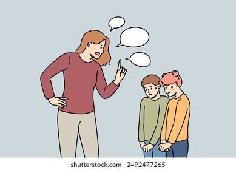

Pagina 4
LETRA I
En esta pagina encontraremos las palabras mas comunes para la letra I.
1. Irrisorio: Que es insignificante o de poca importancia.
2. Inmarcesible: Que no se marchita o no puede perecer.
3. Increpar: Reprender o reprochar con severidad.

4. Inicuo: Sumamente injusto o malvado.
5. Incoercible: Que no puede ser reprimido o contenido.